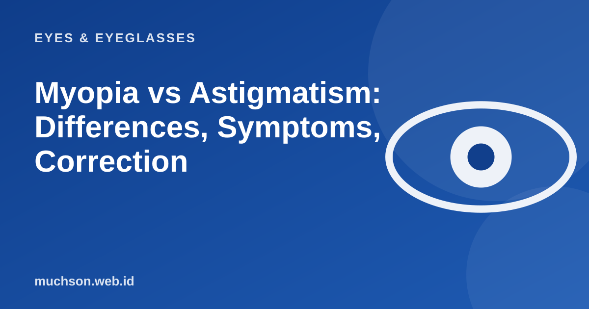

Home › Articles › Eyes & Eyeglasses
Eyes & EyeglassesMyopia vs Astigmatism: Differences, Symptoms, Correction
Both blur your vision, but myopia (minus) and astigmatism (cylinder) have different causes, are corrected differently, and often occur together. Slide, tap and try the simulations below so the difference is something you feel, not just vocabulary you memorise.

In short: what is the difference?
Text description of the diagram
Myopia (nearsightedness)
- Distant objects look blurry
- Near objects are still clear
- Focus falls in front of the retina
- Corrected with concave (minus) lenses
- Written in the SPH column of the prescription
Astigmatism (cylinder)
- Vision looks blurred or "stretched"
- Can affect both far and near
- The cornea / lens is not perfectly round
- Corrected with cylindrical lenses
- Written as CYL and AXIS in the prescription
Myopia: focus falls in front of the retina
In a normal eye, light from distant objects is focused exactly on the retina, the light-sensitive layer at the back of the eye. In a myopic eye, light is focused slightly in front of the retina. The usual cause is an eyeball that is too long, or a cornea and lens that curve too much. As a result, distant objects look blurry while near objects stay clear. Slide the eyeball length in this simulation and watch the black dot (the focal point) move relative to the red line (the retina).
Notice that minus glasses do not "change the eye". They only shift the focal point back until it lands exactly on the retina. That is why, as soon as the glasses come off, vision is blurry again.
Astigmatism: the cornea is not perfectly round
A normal cornea curves like the surface of a ball. In astigmatism (cylinder), the curvature is not the same in every direction, more like the surface of an egg or the back of a spoon. The light that enters splits into two focal points, so the image looks blurry, slightly doubled or stretched in a certain direction. Try changing the direction and strength of the cylinder in this clock-dial simulation: lines in one direction blur while the other direction stays sharp.
Symptoms to watch for
- Squinting to see the whiteboard, road signs or the TV screen (typical of myopia).
- Eyes that tire quickly, ache around the eyes, or headaches after reading or looking at a screen.
- Letters or lines that look blurry, slightly doubled or tilted (typical of astigmatism).
- Trouble seeing clearly at night, with lights that look smeared.
- Holding a phone screen or book too close.
These symptoms can also appear with other eye conditions. An examination by an eye doctor or optometrist is still the right way to be sure. Get checked right away if blurry vision appears suddenly, you see flashes of light, or a dark shadow spreads across your vision.
How to read your glasses prescription
A prescription usually lists OD (right eye, oculus dexter) and OS (left eye, oculus sinister), with columns for SPH (sphere: minus or plus), CYL (cylinder), AXIS (the direction of the cylinder in degrees), and sometimes ADD (extra power for reading) and PD (the distance between the pupils). Enter the numbers from your own prescription into the decoder below.
Can myopia and astigmatism be cured?
Glasses and contact lenses correct vision, but they do not cure it. In some adults, refractive surgery such as LASIK or other procedures can reduce dependence on glasses, but not everyone qualifies and there are risks, so an eye specialist must assess you. Myopia usually keeps increasing until the late teens or early twenties, and then tends to stabilise. Potions, miracle eye exercises or therapies with no scientific basis have not been shown to remove it.
Choosing the right correction
| Option | Best for | Things to consider |
|---|---|---|
| Glasses | Almost everyone, including children | Easy and affordable; need replacing when your numbers change |
| Contact lenses | Active people, or those uncomfortable in glasses | Needs strict hygiene; astigmatism needs a special type (toric) |
| Orthokeratology | On a doctor's advice, often discussed for children | Worn overnight, needs close supervision |
| Refractive surgery | Adults with a stable prescription, after a doctor's assessment | Has requirements, costs and risks |
FAQ
Which is worse, myopia or astigmatism?
Why does my minus keep increasing?
How often should I have my eyes checked?
Can I order glasses with a prescription from another place?
References
- Alodokter: differences between astigmatism and myopia (in Indonesian) (opens in a new tab)
- Halodoc: myopia vs astigmatism (in Indonesian) (opens in a new tab)